Live demo
Where I started
Getting the three-container app onto Rahti
The starting point was the same Nginx / Flask / MySQL application from the previous exercise, running locally with Docker Compose. This week's job was to get the same three pieces running on Rahti instead — as Kubernetes Deployments and Services, with the frontend exposed publicly and the backend and database only reachable internally.
On the Kubernetes side that meant a Deployment and Service for each of the three components, a ConfigMap for ordinary configuration, a Secret for the database credentials, a PersistentVolumeClaim for MySQL's storage, and a public Route pointing only at the frontend.
Shipping the images
Before any of that could run on Rahti, the frontend and backend images had to exist somewhere Rahti could pull them from. I tagged both with a version number and pushed them to Docker Hub.
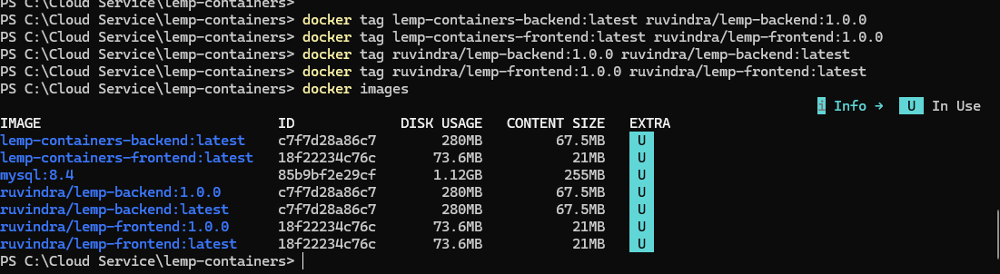
ruvindra/lemp-backend:1.0.0 and ruvindra/lemp-frontend:1.0.0.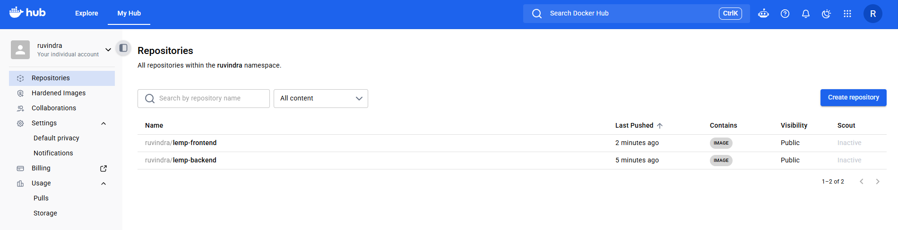
The first crash
The very first deployment attempt left the frontend Pod stuck crash-looping with:
nginx: [emerg] mkdir() "/var/cache/nginx/client_temp" failed (13: Permission denied)
Rahti runs containers under an arbitrary, non-root user ID, so Nginx's default cache directories weren't writable. The fix was to point Nginx's temp/cache paths at /tmp instead, inside nginx.conf, which is writable regardless of UID — then rebuild and redeploy.
Does it actually work?
Proving the three tiers talk to each other
Getting Pods to Running doesn't prove much on its own — the real test is whether a request actually crosses all three tiers and comes back with something that could only have come from the database.
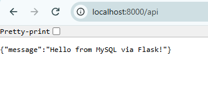
/api returning {"message":"Hello from MySQL via Flask!"} — the frontend's request reached the backend, which reached MySQL, and the answer made it all the way back.That first version of the backend only ever returned a fixed string, though — so it didn't really prove MySQL was doing anything. I added two endpoints that make the database's actual involvement unmistakable:
/api/time — a real read
Runs SELECT NOW(); and hands back MySQL's own clock. A value that changes every time you refresh can't be hard-coded.
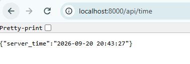
/api/visits — a real write
Every page load sends a POST here, which increments a counter stored in a visits table and returns the new total. Because the number lives in MySQL rather than the container, it keeps climbing across refreshes instead of resetting.
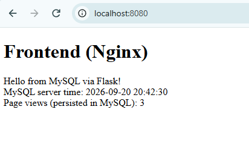
The interesting part
Chasing down a persistence bug
The assignment asks for proof that the database survives its Pod being deleted and recreated. My first attempt at this didn't go as planned, and tracking down why turned into the most useful part of the whole week.
It didn't survive
I deleted the running MySQL Pod, expected the visit counter to pick up where it left off once the replacement came online, and instead got this:
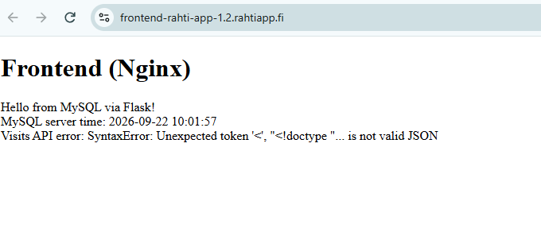
/api/visits came back with an HTML error page instead of JSON.oc get pvc showed mysql-data stuck on Pending — never bound to any actual storage.
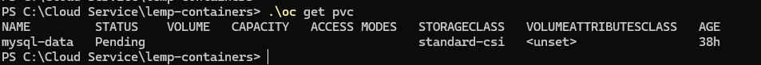
oc describe pvc showed Used By: <none>, and oc get deployment db -o yaml confirmed why — the Pod's actual volume was an emptyDir, not the PVC at all:
volumes:
- emptyDir: {}
name: mysql-storage
emptyDir is ephemeral storage tied to the Pod's own lifetime — deleting the Pod deletes the data with it. The manifest itself had the bug, a misplaced indent in rahti/mysql-deployment.yaml:
persistentVolumeClaim:
claimName: mysql-data # claimName isn't nested — treated as unrelated
With claimName sitting as a sibling of persistentVolumeClaim instead of inside it, Kubernetes saw no valid volume source and quietly defaulted to emptyDir.
The fix, and trying again
persistentVolumeClaim:
claimName: mysql-data # nested correctly
After correcting the indent and re-applying, oc get pvc finally showed Bound, with a real 1Gi volume attached. One more wrinkle: the backend only creates the visits table once, at startup — and it had been running since before this properly-bound volume existed, so the table had never been created on it. Restarting the backend Pod re-ran that startup logic and created it fresh.
With both fixed, I built the counter up to 4 and deleted the MySQL Pod again:
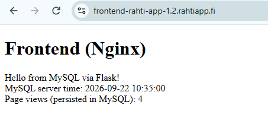
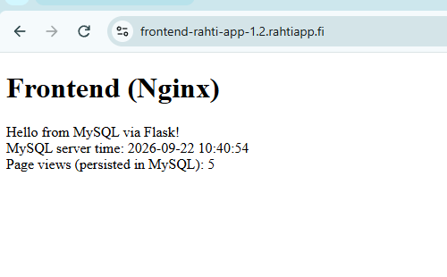
4 became 5, not 0 or 1. That's the actual proof: the data now lives on the bound PersistentVolumeClaim rather than inside whichever Pod happens to be running.
Pushing on it deliberately
What happens when a Pod disappears
Killing the backend on purpose
A Deployment is supposed to notice when it has fewer Pods than it wants and fix that itself. I deleted the running backend Pod to see it happen:
PS C:\Cloud Service\lemp-containers> .\oc delete pod backend-779744986f-p49ff pod "backend-779744986f-p49ff" deleted from rahti-app-1 namespace PS C:\Cloud Service\lemp-containers> .\oc get pods -w NAME READY STATUS RESTARTS AGE backend-779744986f-zcsl9 1/1 Running 0 47s ...
A replacement Pod appeared within seconds. The Deployment continuously compares its actual Pod count against spec.replicas; the moment it sees a shortfall, its ReplicaSet schedules a new one — no manual intervention needed.
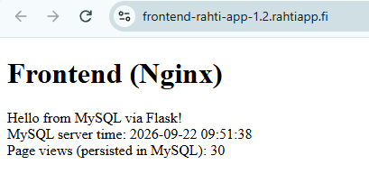
Running two backends at once
Next, scaling the backend up from one replica to two, to confirm multiple copies can genuinely run side by side:
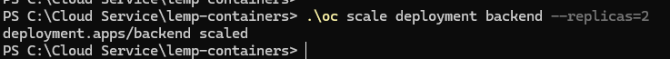
oc scale deployment backend --replicas=2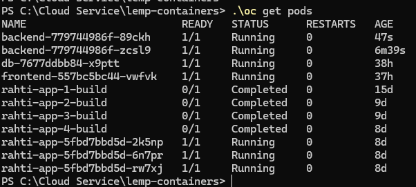
1/1 Running.The frontend never had to change or learn a second address — it only ever talks to the backend Service, which spreads requests across whatever Pods are currently healthy behind it. After confirming the app still worked fine with two replicas, I scaled back down to one:
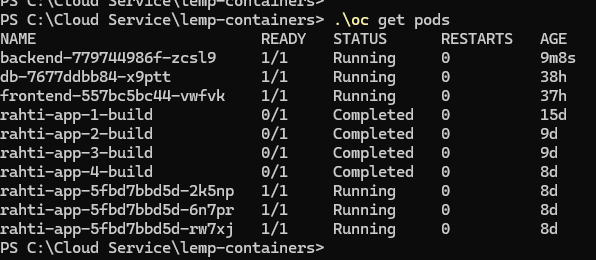
Keeping the password out of Git
ConfigMap and Secret, and why they're not the same thing
The backend reads its database settings from two different places, split by how sensitive each value is:
- A ConfigMap (
app-config) holdsDB_HOST,DB_NAME, andDB_USER— plain configuration, fine to read in the clear. - A Secret (
mysql-secret) holdsDB_PASSWORDandMYSQL_ROOT_PASSWORD— values that shouldn't be sitting in a file in Git or visible in a casualoc get.
Kubernetes stores Secret data base64-encoded and access-controlled separately from ConfigMaps, so it doesn't show up in plain text by accident the way a ConfigMap does. Just as importantly, the Secret was created directly on the cluster with oc create secret rather than from a YAML file — the password never had to touch the Git repository at all.
Shipping a change
Rolling out the read/write feature
Adding the read and write endpoints doubled as the assignment's application-update experiment. Both images got new version tags and were redeployed:
| Image | Before | After |
|---|---|---|
| ruvindra/lemp-backend | 1.0.0 | 1.0.1 |
| ruvindra/lemp-frontend | 1.0.1 | 1.0.2 |
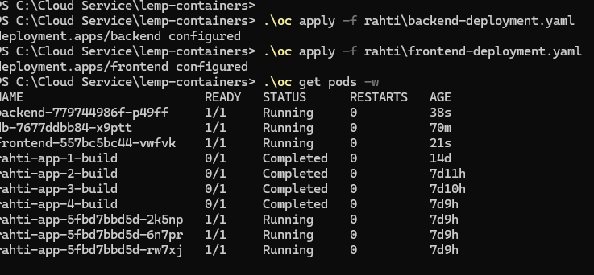
1/1 Running, replacing the old ones with no gap in the Service.